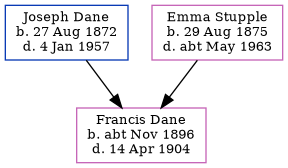

Francis Dane cNov 1896 - 1904
[ Home ] | [ Calendar ] | [ Surnames Index ] | [ Family History ]The child of Joseph Dane (a master mariner and licensed victualler) and Emma Stupple (a domestic general servant), Francis Dane, the second cousin twice-removed on the mother's side of Nigel Horne, was born in Faversham, Kent, England c. Nov 18961. On Mar 31, 1901, she lived at 3 Danes Cottage in Faversham3.
She died on Apr 14, 1904 in Faversham2.
Parents
- Joseph was born on Aug 27, 1872
- Emma Jane was born on Aug 29, 1875
Citations
- England & Wales births 1837-2006 - Findmypast
- England & Wales deaths 1837-2007 - Findmypast
- 1901 England, Wales & Scotland Census - Findmypast (was age 4 and the daughter of the head of the household)
Media
1901 England, Wales & Scotland Census - GBC/1901/0006632274
England & Wales births 1837-2006 - BMD/B/1896/4/AZ/000147/176
England & Wales deaths 1837-2007 - BMD/D/1904/2/AZ/000080/346
Family Tree
Generated by Ged2Site. Last updated on Jul 20, 2025